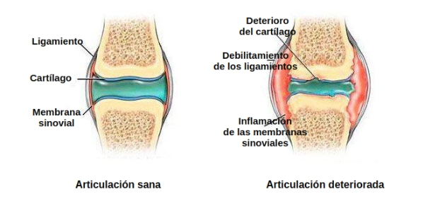

"Los métodos de tratamiento de las articulaciones que se implican en España no parecen nada convenientes". El famoso reumatólogo japones dio una entrevista franca a la edición española
El Dr. Shigeaki Hinohara es el jefe del mundialmente famoso Centro de Reumatología y Neurología de Tokio
Hay sólo una causa de enfermedades de las articulaciones, pero está completamente ignorada por los médicos españoles.
Dr. Shigeaki Hinohara: "En España las enfermedades de las articulaciones todavía se tratan con medicamentos anticuados y poco eficaces que requieren un uso constante durante toda la vida. Mientras que en Japón las articulaciones se tratan tan fácilmente como un catarro."

El año pasado Shigeaki Hinohara viajó a España para examinar la experiencia de sus colegas españoles. Lo que vio en España, según él, no se puede explicar. En nuestro país, según Shigeaki, la reumatología se paró en su desarrollo a nivel de mediados del siglo pasado.
Después de dar unas entrevistas en Japón, el Dr. Shigeaki Hinohara dio su consentimiento para una entrevista a nuestra edición española. ¿Qué cosas no le gustaron al famoso médico en la medicina española? ¿Y por qué afirma que los españoles que sufren de dolor en las articulaciones nunca podrán curarse?
Hablando ante los periodistas japones, Usted dijo que lo que había visto en España le había dejado en shock. ¿Podría comentarlo?
Ante todo quiero decir que me gusta mucho España, su cultura y sus ciudadanos. Pero el estado de la medicina acá realmente deja en shock a los médicos japones. Su medicina retrasa como mínimo 20, o tal vez 30 años. Por lo menos, en lo que toca al tratamiento de enfermedades articulares y del aparato locomotor. Se puede decir que la reumatología no existe como una ciencia en España.
Mire lo que los médicos sugieren para tratar las articulaciones en España: Viprosal, Ibuprofeno, Voltaren\Fastum Gel, Diclofenac, Theraflex, Nurofen y otros medicamentos similares.
Sin embargo, estos medicamentos NO TRATAN LAS ARTICULACIONES Y LOS CARTÍLAGOS, solo alivian los síntomas de la enfermedad: dolor, inflamación, hinchazón. Ahora imagine lo que está sucediendo en el cuerpo. Cuando uno toma una pastilla, aplica un gel anestésico o hace una inyección, el dolor se pasa. Pero una vez que el remedio deja de funcionar, el dolor vuelve inmediatamente.
Y el dolor es una señal importante, señala que una articulación tiene un proceso patológico. Simplemente aliviando el dolor, las articulaciones afectadas sufren un mayor impacto. El proceso de destrucción se acelera de 3 a 5 veces y al final conduce a unos cambios irreversibles, inmovilización completa y discapacidad.
Esta forma de eliminar el dolor en las articulaciones no se utiliza en Japón ya durante más de 20 años. Los remedios contra el dolor se usan solo en casos extremos, muy raramente y con mucho cuidado. En Japón, se venden solo con recetas y bajo estricto control médico.
Los llamados "hondroprotectores" están prohibidos por completo como medicamentos absolutamente fraudulentos e inútiles.
¡Sus médicos y farmacéuticos simplemente mutilarán a la gente! Está claro que es mucho más beneficioso vender constantemente a altos precios unos remedios para eliminar los síntomas que curar la enfermedad para siempre, recuperar la articulación afectada, ¡pero es horrible!


¿Y cómo en Japón van las cosas con el tratamiento de las articulaciones?
Todos los médicos japoneses, desde los catedráticos-reumatólogos hasta los médicos de cabecera ordinarios y los paramédicos, entendieron hace mucho que no es necesario eliminar los efectos de la enfermedad, sino sus causas. Es la única garantía de una curación completa, rápida y segura. ¿Cuál es la causa principal de lesiones en las articulaciones? Es la deposición de cristales en las articulaciones debido a un trastorno de la circulación sanguínea y del líquido sinovial.
Los uratos son sales de ácido úrico que causan la gota.
Los osteofitos, las sales calcinadas, son la causa del 97% restante de las enfermedades articulares y de la columna vertebral. Que son todo tipo de artritis y artrosis, osteocondrosis, osteoporosis, reumatismo, bursitis e incluso higroma. Todas estas enfermedades tienen una causa: deposición de osteofitos.
Las sales, deponiéndose en las superficies de la articulación, actúan como si el papel de lija afilara los tejidos circundantes - los huesos y el cartílago. Creciendo, los cristales de sales comienzan a traumatizar el tejido muscular, los tendones, los vasos sanguíneos y los capilares. Causando la inflamación, infección, hinchazón y dolor severo.
En casos descuidados, los grandes cúmulos de estas sales pueden romper fácilmente una parte del hueso con un movimiento brusco, causando así una incapacidad total y inmovilizando para siempre la articulación.
Una idea errónea y muy peligrosa es que el calcio es útil para las articulaciones. Sí, el calcio es útil, pero solo para las articulaciones SANAS. Cuando las articulaciones ya duelen o castañetean, significa que ya se ha formado una capa de osteofitos, y el calcio, además de fortalecer el tejido óseo, también fortalece estas sales-osteofitos, agravando y acelerando su crecimiento.
Por eso los reumatólogos japones recuperan ante todo la circulación sanguínea en la articulación afectada, de modo que se eliminen las sales acumuladas durante años. Esto, a su vez, recupera la circulación normal del líquido sinovial y comienza el proceso de reparación de los tejidos de la articulación.
De hecho, las articulaciones humanas son muy regenerativas, son capaces de recuperarse por sí mismas, como una cola de lagarto. Sólo necesitan un poco de ayuda en esto - para liberarse de sales "pegadas" en ellas - y el proceso se pondrá en marcha.
En los años 90 del siglo pasado los científicos suizos lograron obtener una forma especial de cuasi-vitamina B, el llamado alfa-artroferol. Se obtiene mediante la síntesis de ingredientes naturales: veneno de serpiente, cuernos de ciervos siberianos, grasa de tiburón más un conjunto de más de 50 extractos diferentes. El extracto de cuernos de ciervos siberianos es aquella sustancia que proporciona el crecimiento activo de los cuernos del animal. Es decir, su tarea principal es crear un nuevo tejido óseo. ¿Se imagina el poder biológico de un mecanismo similar? Todavía no existe nada más efectivo para activar la circulación sanguínea en los huesos y las articulaciones.
Esta sustancia es capaz de penetrar en el interior de las moléculas de sales y rasgarlas desde el interior – como resultado se limpia la superficie de las articulaciones, se recupera el flujo sanguíneo y la circulación del líquido sinovial. ¡PARA SIEMPRE! Más precisamente, hasta que las sales se acumulen de nuevo (pero esto requerirá varias decenas de años). Ya no es necesario TOMAR CONSTANTEMENTE los medicamentos para aliviar el dolor y la inflamación. No hay que tener miedo de que una vez la articulación sea "paralizada" para siempre, quedándose completamente sin movilidad y necesitando prótesis. Las personas se hacen completamente sanas para decenas de años.
Cuando vi las estadísticas médicas de España, me asusté. ¿Sabe cuál es la causa más frecuente de discapacidad en España? ¡No es cáncer ni SIDA ni diabetes, es artrosis! ¡La artrosis más simple que en Japón se trata en 2 o 3 semanas con el medicamento bastante económico, en España conduce a la discapacidad!
En Japón hoy en día, las enfermedades articulares no se consideran patologías peligrosas, a menos que, por supuesto, se trate de daños traumáticos graves: fracturas, fisuras etc. El dolor y la inflamación en las articulaciones solo indican que estas "están contaminadas" con sales y es hora de limpiarlas. Después de un curso mensual de "limpieza", las articulaciones se vuelven en norma y se puede olvidar de estos problemas para toda la próxima década.
Las enfermedades articulares que en España están tratando de "tratar" por separado, en Japón ya están unidas desde hace mucho en una sola enfermedad "Articulatio de sales" (deposiciones de sales en las articulaciones). Esta enfermedad incluye:
- Gota
- Artritis
- Artrosis
- Osteocondrosis
- Reumatismo
- Osteoporosis
- Bursitis
- Sinovitis
- Higroma
Esta es una lista muy breve, pero el resto de las enfermedades son solo una subespecie de estas nueve patologías principales. Por ejemplo, la coxartrosis es una subespecie de la artrosis, etc.
Y toda esta larga lista de enfermedades se cura con una limpieza muy simple y banal de las articulaciones. Es absolutamente segura, ni siquiera requiere atención médica y se lleva a cabo en casa.
¿Cómo "limpian" las articulaciones en Japón?
Hoy en día existen medicamentos especiales que están diseñados para limpiar las articulaciones de las deposiciones de sal. Contienen alfa-artroferol. Por ejemplo, un remedio muy bueno es Fortuflex. Contiene alfa-artroferol en una forma especial, fácil de digerir, por lo que este medicamento tiene una mayor eficiencia.
También una ventaja importante de Fortuflex es que contiene un complejo de vitaminas de artro-, macro- y microelementos diseñadas para mejorar el funcionamiento de los tejidos de la articulación. Es decir, tiene un efecto curativo integral para el tejido óseo y cartilaginoso, líquido sinovial, fibras musculares, tejidos de los ligamentos y tendones. O sea, tiene un efecto complejo e integral, es una crema increíble.
Fortuflex incluye más de 50 componentes. No voy a enumerarlos todos, solo los principales:
Células de cuernos del ciervo siberiano - Aceleran los procesos de regeneración en los tejidos de la articulación
Arto-Vitamina B3 - Fortalece y tonifica el tejido cartilaginoso, aumenta su elasticidad, aumenta la resistencia a la abrasión
Vitamina A - Normaliza la penetrabilidad de los capilares pequeños
Veneno de serpiente (micro-moléculas) - Alivia la inflamación y la infección de los tejidos de la articulación, detiene los procesos de pudrición
Alfa-artroferol - Destruye las deposiciones de sales, las ablanda y las descompone en elementos excretados
Vitamina B3 - Dilata los vasos sanguíneos, mejora el flujo sanguíneo en el área de la articulación
Grasa de tiburón (elementos alfa) - Normaliza la circulación del líquido sinovial
Por lo que sabemos, Fortuflex no se vende en las farmacias españolas.
Claramente, que no. Los médicos españoles prefieren prescribir a la población los anestésicos y hondroprotectores en una cantidad enorme en lugar de practicar el tratamiento real.
Sin lugar a dudas, los reumatólogos españoles, al menos aquellos que están interesados en los tratamientos progresivos, conocen Fortuflex y sus capacidades para recuperación. Pero no se arriesgan a recetar un medicamento que no está en la lista del Ministerio de Salud.
Por lo que yo sepa, el fabricante del Fortuflex quería entrar en el mercado español. Pero no le permitieron hacerlo inventando cientos de obstáculos (la burocracia en España no tiene límites). Es comprensible: si este remedio aparece en las farmacias, las farmacias españolas sufrirán enormes pérdidas. ¡Es que la farmacología hoy es un negocio! Incluso en Japón. Pero en Japón el negocio está controlado por el estado, y no voy a juzgar lo que está sucediendo en España, Ustedes lo sabrán mejor.
¿Qué aconsejaría a los españoles con las articulaciones afectadas?
La gente corriente, especialmente la que tiene más de 50, sufre del retraso de la medicina más que otros. No es su culpa, es sólo el sistema de sanidad.
Pero afortunadamente, hay una salida. ¡Se creó un sitio web oficial especial con el que cualquier habitante de España puede pedir Fortuflex con un costo mínimo!
Llevamos tres meses distribuyendo Fortuflex. Esta oportunidad ya la aprovecharon varios miles de españoles. Les pedimos a todos los que recibieron Fortuflex que evalúen la eficacia del medicamento en una escala de 1 a 10. Por el momento, más de 3.000 personas participaron en la encuesta y la evaluación promedia del medicamento es 9.97 de 10.
Como puede ver, ¡Fortuflex ayudó a devolver la movilidad y deshacerse del dolor a miles de españoles y casi gratis! Usted también puede estar entre ellos.
¿Cuánto tiempo durará la distribución preferencial de esta crema fantástica?
Hasta que termine el lote dedicado. Pero quiero advertirles que ya quedan pocas unidades. Hay más pedidos con cada día. Funciona el método de "boca a boca", la gente transmite la información entre sí, aconseja a los amigos, pide la crema para los familiares. No esperábamos que la información sobre Fortuflex se distribuyera tan rápido por toda España.
Recomiendo a todas las personas que tienen problemas con las articulaciones que envíen una solicitud al sitio para recibir Fortuflex por oferta hasta que termine. Y recuerden siempre que nuestra salud es lo más importante y valioso que tenemos.

Marina Sánchez García
Dr. Shigeaki, le estoy muy agradecida por este producto. He estado buscando algo como esto durante mucho tiempo. ¡Tengo muchas ganas de que llegue mi paquete! ¡Gracias!
hace una hora
María Martínez López
¡He curado mi artrosis gracias a su crema! ¡Muchísimas gracias!
hace una hora
Soraya Moliner Sánchez
¡Estoy completamente encantada! ¡Es un producto eficaz para problemas articulares! Mis codos y rodillas han dejado de doler.
hace una hora
Andrés Gil Mendoza
¡Gracias por esta crema, Dr. Shigeaki! No solo salvó a su esposa sino que también a muchas personas de nuestro país. He decidido probar Fortuflex para la columna vertebral. Tengo osteocondrosis y realmente me ha ayudado. ¡Creo que ahora todo estará bien!
hace una hora
Shigeaki Hinohara
Andrés, no te preocupes y sigue usándolo Fortuflex . No te olvides de seguir las instrucciones de uso de esta crema.
Saludos, Shigeaki.
hace una hora
Ángel Corral Vega
¿Alguien me puede ayudar? Estoy harto del dolor de espalda. Me agota muchísimo. Ya no sé qué hacer. Tomo todo tipo de pastillas, me aplico diversos geles de vez en cuando, pero no ayuda nada:(
hace una hora
Carlos Pérez Navarro
Ángel, cómprate Fortuflex y no te arrepentirás. Yo también tuve problemas articulares hasta tal punto que no podía caminar. Menos mal que mi madre encontró esta crema y me lo dio. Lo compró hace 6 meses por el precio original (de todos modos, me parece que no era tan alto). Y, ahora, no tengo ningún problema con mis articulaciones. Puedo moverme normalmente. Créeme, ¡es genial! Te pondrás bien y, además, podrás llevártelo con un 50% de descuento.
hace una hora
Natalia Martínez Hernández
¿Cómo puedo pedir la crema Fortuflex?
hace una hora
Juan Hinojosa Díaz
Natalia, aquí tienes el enlace al sitio web oficial, pero te aconsejo que te des prisa si quieres llevártelo con un 50% de descuento. A mí me ayudó mucho.
hace una hora
Natalia Martínez Hernández
Gracias, Juan. Acabo de pedirlo. ¿Cuánto tardará en llegar?
hace una hora
Juan Hinojosa Díaz
Natalia, unos 3 días:)
hace una hora
Irene Picazo Ortega
Pedí esta crema hace dos meses para mi hermana que había estado sufriendo artritis durante mucho tiempo. Me dio las gracias después de usarlo. Simplemente me arriesgué y se lo pedí.
hace una hora
Manuel Ibáñez Romero
Irene, ¿realmente es tan eficaz? Tal vez debería pedírmelo yo también. De todos modos tiene un 50% de descuento, ¿verdad?
hace una hora
Julián Corcoles Torres
Yo también escuché algo sobre este producto por ahí. Creo que se lo pidieron algunos amigos míos. Llevo dos años con dolor de piernas. A veces, el dolor es insoportable, y los médicos no saben cómo ayudarme. Yo también he decidido pedir Fortuflex . Voy a probar a ver qué tal.
hace una hora
Gonzalo Pardo Valero
Bueno, parece que mucha gente tiene problemas articulares. Vi un anuncio sobre Fortuflex hace un mes y me salvó de la osteocondrosis más rápido que muchos otros productos.
hace una hora
Alejandro Blázquez Requena
¿Alguien sabe si realmente me va a ayudar? Las farmacias y los médicos no son muy buenos que digamos.
hace una hora
Laura Arenas Ballesteros
Alejandro, seguro que sí. Es eficaz y no tiene efectos secundarios. ¡Así que date prisa y pídelo! Fortuflex me ayudó a deshacerme completamente de los problemas de espalda.
hace una hora
José Miguel Collado Rull
Gracias, ¡Fortuflex me ayudó mucho! ¡Lo compré en el sitio web oficial! No dejéis el tratamiento para después. Es mejor hacerlo ahora que lamentarlo más tarde con amargura.
hace una hora
Sandra Marín Cuenca
Gracias, Dr. Shigeaki. ¡Si no fuera por usted, no creería en la eficacia de Fortuflex! Llevo viviendo 5 años con mi marido que tuvo el mismo problema que su esposa. Sufría terriblemente y ahora corre como si tuviera 18 años otra vez.
Además, el paquete llegó muy rápido.
hace una hora
Shigeaki Hinohara
Sandra, me alegro. Mejor dime cuánto tardó en recuperarse.
Saludos, Shigeaki.
hace una hora
Sandra Marín Cuenca
Shigeaki, tardó más o menos un mes en recuperarse. Ahora puede moverse libremente y no se queja como solía hacerlo. Estoy muy contenta por él.
hace una hora
Shigeaki Hinohara
Perfecto. Gracias, Sandra.
Saludos, Shigeaki.
hace una hora
Elena Rodenas Moya
El resultado superó todas mis expectativas. ¡La ciática se ha ido de una vez por todas! Lo pedí para mis amigas también. Una de ellas tiene dolor de espalda y a la otra le duele la articulación del codo.
hace 57 minutos
Lorena Tebar Núñez
Acabo de rellenar el formulario en vuestra página web...
¡Me sorprendió el hecho de que realmente lo vendiesen con un 50% de descuento!
Dejé mi número de teléfono en vuestro sitio web y me llamaron en cuestión de minutos para confirmar el pedido. A partir de ahora, quiero vivir sin dolor y empezar a disfrutar de mis paseos otra vez:)
hace 55 minutos
Esther Cano Garrido
Lo pedí para mí también. La artritis me había estado atormentando terriblemente durante varios años. Cada vez que llovía o cambiaba el tiempo, el dolor prácticamente me mataba. Fortuflex me ayudó en un par de semanas. Ni siquiera podía imaginar que iba a ser posible.
hace 53 minutos
Paula Morcillo Cárdenas
Un amigo nuestro vende esta crema en su farmacia por casi 69.98 €, así que decidimos no comprarlo. Cuando vi esta oferta, inmediatamente decidí pedirlo. Somos jubilados y no tenemos mucho dinero para gastar. Mi rodilla ya no me duele, así que ahora puedo trabajar en el jardín sin problemas. ¡Gracias!
hace 48 minutos
Shigeaki Hinohara
Paula, es cierto que las farmacias venden esta crema. Es lamentable que ganen dinero de esta forma a expensas de las personas enfermas. Vamos a empezar a controlar los lugares a los que mandamos nuestro producto.
Saludos, Shigeaki.
hace 36 minutos
Sofía Fernández Úbeda
Fortuflex me ayudó a deshacerme de mi gota después de solo 1 tratamiento y ahora siempre lo tengo a mano por si acaso.
hace 36 minutos
Jorge Medina Sáez
También lo pedí en vuestra página web. Me ayudó mucho. Si tenéis problemas articulares, no hay nada mejor, creedme. Además, te llega rápido. Mi paquete llegó en tan solo 3 días.
hace 39 minutos
Shigeaki Hinohara
¡Gracias, Jorge! Intentamos entregar Fortuflex a nuestros clientes lo más rápido posible para que puedan comenzar el tratamiento al instante.
Saludos, Shigeaki.
hace 36 minutos
Lucía Ruiz Gómez
Leí el artículo y decidí pedir este bálsamo gratis inmediatamente para probarlo. Me inspiró mucho la historia de Shigeaki y su esposa. El caso es que los productos habituales no me ayudaron por mucho tiempo. Los médicos me dijeron que la artritis era difícil de curar. Ahora me gustaría escribir sobre los resultados del tratamiento. Fortuflex me llegó muy rápido. Sentí tanto alivio después de una sola aplicación que decidí compartir mi alegría con los demás. ¡Estoy súper feliz de que pueda llevar una vida normal otra vez!
hace 31 minutos
Dolores Navarro Rodríguez
¿Alguien puede decirme dónde puedo conseguir este producto? No lo he visto en las farmacias y tengo un poco de miedo de comprarlo por Internet. No me gustaría comprar una falsificación porque entiendo que no servirá para nada.
hace 27 minutos
Shigeaki Hinohara
Vuelvo a decir que Fortuflex se puede pedir SOLAMENTE en nuestro sitio web oficial. Para evitar malentendidos, simplemente haced clic en el botón de enlace justo arriba. Me gustaría recordaros que Fortuflex se puede obtener con un 50% de descuento, pero esta oferta no durará mucho, ¡así que daos prisa!
Por favor, tened cuidado con las falsificaciones.
Saludos, Shigeaki.
hace 15 minutos